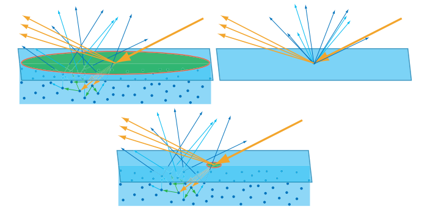
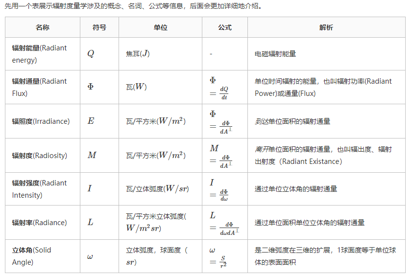

PBR（Physicallly-Based-Rendering 基于物理渲染），它指的是一些在不同程度上都基于与现实世界的物理原理更相符的基本理论所构成的渲染技术的集合。它比一般的Phong和Blinn-Phong光照算法更真实一些。
简述
基于物理的渲染仍然只是对基于物理原理的现实世界的一种近似，这也就是为什么它被称为基于物理的着色(Physically based Shading) 而非物理着色(Physical Shading)的原因。判断一种PBR光照模型是否是基于物理的，必须满足以下三个条件：
- 基于微平面(Microfacet)的表面模型。
- 能量守恒。
- 应用基于物理的BRDF。
使用PBR的好处是，无论我们的参数设置是否真实，他得出的结果都会符合PBR的物理模型。也就是说我们完全不用担心模型的物理原则，着色器会为我们完成这部分，这让我们可以专注于呈现效果而不是物理部分。
微表面
PBR渲染管线中采用的是一种叫做微表面（Microfacet Model）的材质模型，它基于物理的观察，认为达到微观尺度后，物体表面都由很多凹凸不平的微小镜面组成。所有的PBR技术都基于微平面理论。微平面还有粗糙平面和光滑平面，这两种平面的微平面排布有很大的不同：

和中学物理学的内容一样，微平面排布的无序程度会影响光的反射，从而影响光的发散（Scatter）程度。

对于任何物质来说，他的微表面都不可能是完全光滑的。
这些具有不同大小、方向的微表面在对入射光线进行反射时产生了不同的反射效果，从而使得人眼能观察到不同的材质属性。因此，微表面模型能够更加真实地模拟各种不同的材质。
当一束光线碰撞到一个表面的时候，它就会分离成一个折射部分和一个反射部分。反射部分就是会直接反射开来而不会进入平面的那部分光线，这就是我们所说的镜面光照。而折射部分就是余下的会进入表面并被吸收的那部分光线，这也就是我们所说的漫反射光照。

蓝线是物体宏观表面，n为其宏观法线，黑线为一个个微平面。
并非所有的微平面都会对光线的呈现效果起作用。如上图虚线所示，有些微表面的光线会被阴影（shadowing）或者遮罩（Mask ing）阻挡。
微平面的无序程度用粗糙面（Roughness）来描述。根据粗糙度我们可以计算出中间向量（中间向量是光线向量$l$与视线向量$v$之间的中间向量）方向与微平面平均取向方向一致的概率。
中间向量的公式如下：

其中，θ 为 L 和 V 之间夹角的一半。因此，

微平面的取向方向与中间向量的方向越是一致，镜面反射的效果就越是强烈越是锐利。然后再加上一个介于0到1之间的粗糙度参数，这样我们就能概略的估算微平面的取向情况了：

根据实际情况也能看出，越小的粗糙度可以达到更小更锐利的镜面反射。
能量守恒
所有PBR方法都得满足一种形式上的能量守恒，即出射光线的能量永远不能超过入射光线的能量。
在能量守恒中，漫反射光照和镜面反射光照内能量被消耗的形式是不同的，因此我们需要对两种反射进行一定的区分。
在漫反射光照（折射）中，光线接触到一个表面时光是不会立即被吸收的，它是通过碰撞的方式消耗能量。光线最后离开物体表面或者完全被吸收，离开物体表面的光会协同构成该表面的漫反射颜色。在PBR中我们对该过程进行了一定的简化，假设了对平面上每一点折射光都会完全被吸收而不是散开。


对于金属(Metallic)表面，当讨论到反射与折射的时候还有一个细节需要注意。金属表面对光的反应与非金属材料（也被称为介电质(Dielectrics)材料）表面相比是不同的。它们遵从的反射与折射原理是相同的，但是所有的折射光都会被直接吸收而不会散开，只留下反射光或者说镜面反射光。亦即是说，金属表面不会显示出漫反射颜色。由于金属与电介质之间存在这样明显的区别，因此它们两者在PBR渲染管线中被区别处理。
反射率方程
反射率方程是PBR的核心，是用来模拟光的视觉效果的一个模型。要了解反射率，我们还要学习辐射学的一些东西。
辐射率
要了解辐射率还需要几个前置概念。
辐射通量：辐射通量Φ表示的是一个光源所输出的能量，以瓦特为单位。通常和光的波长频率挂钩。
立体角：用$w$表示。以观测点作为圆心建立单位圆，描述任意物体投射到单位球体上的一个截面的大小或面积。投射到这个单位球体上的截面面积就被称为立体角。（立体角是投影面积与球半径平方值的比，这和“平面角是圆的弧长与半径的比”类似。）

辐射强度：在单位球面上一个光源向每单位立体角所投送的辐射通量。辐射强度可以帮助我们表示单位面积内光照射的能量大小。
计算辐射强度的公式为：

了解以上前置概念后，我们可以学习辐射率了。辐射率的方程是：
这个方程表示的是，一个拥有辐射强度$Φ$的光源在单位面积$A$，单位立体角$ω$上的辐射出的总能量。

把立体角ω和面积A看作是无穷小的，那么我们就能用辐射率来表示单束光线穿过空间中的一个点的通量。当ω无限小时，我们可以把ω看作入射光线的方向向量。我们就能直接在我们的着色器中使用辐射率来计算单束光线对每个片段的作用。
在了解以上概念之后，我们再回来观察反射率方程：
上述方程中，$f_r$的意思是BRDF，即双向反射分布函数，下面会介绍到，它可以根据表面材质对入射辐射率进行加权或者缩放。
$L_i$是代表通过某个无限小的立体角$ω_i$在某个点$p_i$上的辐射率，$n$是平面A的法线，而无限小的入射光的立体角$ω_i$可以看作入射光方向向量$ωi$，将用来衡量入射光与平面法线夹角对能量的影响的$cosθ$分量移出辐射率方程，作为反射方程的单独项$n⋅ωi$。
用$ωo$表示观察方向，也就是出射方向，反射率公式计算了点$p$在$ωo$方向上被反射出来的辐射率$Lo(p,ωo)$的总和。或者换句话说：$Lo$表示了从$ωo$方向上观察，光线投射到点$p$上反射出来的辐照度（到达表面的 通量 在 单位面积 上的密度）。
这个方程如果翻译成自然语言，大概是这样的：
反射率方程求得是在一个半球范围(一个半球领域(Hemisphere)可以描述为以平面法线$n$为轴所环绕的半个球体)内所有光照的一个叠加效果，而积分符号也就此而来。、
注：为什么是半球而不是整个球呢？因为另外半个球与观察方向相反，也就是说得到的辐射通量贡献量是0。

BRDF
双向反射分布函数 (BRDF) 是描述表面反射特性的函数。函数的输入参数包括入射方向$w_i$，出射方向$w_o$，平面法线$n$，以及表示微平面粗糙程度的$a$。根据这个我们就不难理解，如果有一个完全光滑的镜面（$a$的值为0）则对于所有入射光线来说，只有角度和法线重叠的那束入射光线的函数返回值为1，其余的都为0。
Substance‘s PBR 着色器使用的BRDF基于Disney’s principled reflectance model， 而这个model又基于GGX微平面分布。
GGX 在镜面反射分布方面比起Blinn提供了更好的解决方案之一：高光中的峰值较短，衰减中的尾部较长，看起来更逼真。

Fresnel Effect（菲涅尔效应）
菲涅耳反射系数也是BRDF很重要的一部分。他阐述了折射和反射光的多少和入射角度有很大的关系：随着物体表面法线与视线的角度增大，物体的反射能力增大。
就像我们观察水面一样，如果我们观察的角度十分大（视线很贴近水面），我们只能看到不透明的水面，但是如果我们以垂直于水面的角度进行观察的话，我们就能看清水底的东西。
Fresnel并不是我们需要在PBR里控制的东西，它同样会交给着色器控制。
特殊角入射时候的菲涅尔
当光线垂直打到材料表面时，该光线的一部分会被反射为镜面反射。 使用表面的折射率 (IOR)，可以推导出反射量。 这称为 F0（菲涅耳零）。 折射到表面的光量称为 1–F0。

大多数常见电介质的 F0 范围为 0.02-0.05（线性值）。 对于导体，F0 范围为 0.5-1.0。 因此，表面的反射率由折射率决定，如下面的等式所示 (Lagarde 2011)。

在制作纹理时，我们需要关注的是F0反射率值。非金属材质我们用灰度值表示，金属则用RGB值表示。
产生这种差异的原因是，对于导体或者金属表面而言基础反射率一般是带有色彩的，这也是要用RGB三原色来表示的原因（法向入射的反射率可随波长不同而不同）。这种现象我们只能在金属表面观察的到。

非金属的反射率实际上不会发生很大的变化，粗糙度改变时，反射率的变化很难被观测到。各种不同材料的F0的值都不太一样。
金属和非金属（导体和非导体）在PBR中的差异
金属和非金属的差异使得他们在PBR中十分不同，也引出了金属工作流的概念。所以在编写材质时我们也有金属度这个概念。（虽然说金属度应该是个布尔类型的值，但是大部分渲染管线都允许金属度在0-1之间线性调节。这可以帮助我们呈现拥有细沙、沙状粒子、刮痕的金属表面）
金属
一些金属吸收不同波长的光。例如，金吸收可见光谱高频端的蓝光，因此呈现黄色。然而，由于折射光被吸收，金属的色调来自反射光。因此，在我们的贴图中金属一般没有漫反射光。例如，在镜面反射/光泽度工作流程中，原始金属在漫反射贴图中设置为黑色，而反射率值在镜面反射贴图中是着色颜色值。由于我们在基于物理的模型中工作，因此我们需要在地图中使用真实世界的金属反射测量值。

金属在纹理方面的另一个重要方面是它们的腐蚀倾向。这意味着风化元素可以在金属的反射状态中发挥很大的作用。如果金属生锈，这会改变金属的反射状态。所以我们设置金属度贴图，腐蚀部分在金属贴图中用黑色值表示，同时F0的值也需要改变。整个过程的示意如下图。

非金属
非金属的反射量比金属小得多，并且通常拥有albedo color(反照率颜色)。普通非金属的F0在2%-5%之间。
Linear Space Rendering 线性空间渲染
线性渲染空间为照明计算提供了一个数学方式，它允许以可信的现实世界方式表示光交互。
这里引入伽马校正的概念。人类视觉系统对较暗色调的差异更明显，因此我们使用伽马校正，减少分配给人眼无法区分的色调区域的位数，从而减少带宽和比特分配进行优化。这个过程利用了人眼对亮度的感知，它大致遵循亮度的立方根。伽马校正是非线性的，但可以帮助节约大量的编码空间。
编写PBR的流程
在了解了PBR后面的数学模型之后，我们来了解一下美术师怎么通过输入材质物理属性生成结果。PBR渲染管线所需要的每一个表面参数都可以用纹理来定义或者建模。使用纹理可以让我们逐个片段的来控制每个表面上特定的点对于光线是如何响应的。
在下面你可以看到在一个PBR渲染管线当中经常会碰到的纹理列表，还有将它们输入PBR渲染器所能得到的相应的视觉输出：

一般来说有以下几种属性：
反照率：反照率(Albedo)纹理为每一个金属的纹素(Texel)（纹理像素）指定表面颜色或者基础反射率。这和我们之前使用过的漫反射纹理相当类似，不同的是所有光照信息都是由一个纹理中提取的。漫反射纹理的图像当中常常包含一些细小的阴影或者深色的裂纹，而反照率纹理中是不会有这些东西的。它应该只包含表面的颜色（或者折射吸收系数）。
法线：法线贴图使我们可以逐片段的指定独特的法线，来为表面制造出起伏不平的假象。
金属度：金属(Metallic)贴图逐个纹素的指定该纹素是不是金属质地的。详细信息前面已经介绍过了。
粗糙度：粗糙度(Roughness)贴图可以以纹素为单位指定某个表面有多粗糙。一个比较粗糙的表面会得到更宽阔更模糊的镜面反射（高光），而一个比较光滑的表面则会得到集中而清晰的镜面反射。
AO：环境光遮蔽(Ambient Occlusion)贴图或者说AO贴图为表面和周围潜在的几何图形指定了一个额外的阴影因子。比如如果我们有一个砖块表面，反照率纹理上的砖块裂缝部分应该没有任何阴影信息。然而AO贴图则会把那些光线较难逃逸出来的暗色边缘指定出来。在光照的结尾阶段引入环境遮蔽可以明显的提升你场景的视觉效果。网格/表面的环境遮蔽贴图要么通过手动生成，要么由3D建模软件自动生成。
美术师们可以在纹素级别设置或调整这些基于物理的输入值，还可以以现实世界材料的表面物理性质来建立他们的材质数据。这是PBR渲染管线最大的优势之一，因为不论环境或者光照的设置如何改变这些表面的性质是不会改变的，这使得美术师们可以更便捷的获取物理可信的结果。
PBR小结
根据以上简单的学习，我们可以知道PBR有以下几个特征：
1. 能量减少。反射光永远比入射光的强度弱。（但这部分不用我们手动设置，着色器会为我们设置好）
2. 菲涅尔。BRDF由着色器控制，金属的F0在70%-100%之间，非金属的F0在2-5%之间。
3. 镜面反射强度通过 BRDF、粗糙度或光泽度贴图和 F0 反射率值来控制。
4. 照明计算在线性空间中计算。所有具有伽马编码值（gamma-encoded）的贴图，例如基色或漫反射，通常由着色器转换为线性的。描述表面属性（粗糙度、光泽度、金属和高光）的贴图应设置为线性的。